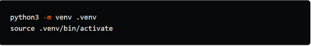
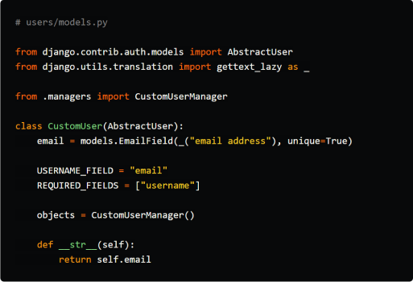

Data has grown to be a priceless resource for businesses in the digital age,
driving
crucial decision-making processes and revealing insights that can transform
data
and spur growth. Web scraping is one of the most effective methods for
obtaining data
from the internet. Understanding the function of networks and how they might
improve
the efficacy of data extraction is crucial for maximizing the potential of web
scraping.
We'llgo into the advantages and applications of web scraping using the
network in this
blog post
- WebRTC
- WebGL
- Canvas
- Time zone
- Geo location
- Language
- Screen settings and more
How it works?
Data has grown to be a priceless resource for businesses in the
digital age, driving
crucial decision-making processes and revealing insights that can transform operations
and spur growth. Web scraping is one of the most effective methods for obtaining data
from the internet. Understanding the function of networks and how they might improve
the efficacy of data extraction is crucial for maximizing the potential of web scraping.
We'llgo into the advantages and applications of web scraping using the network in this
blog post.
The automated technique of extracting data from webpages is called web scraping. Web
scraping enables businesses to gather structured data from diverse online sources by
utilizing specific tools and methodologies. This information can include things like
product
specifications, cost figures, client feedback, and market trends. Web scraping gives
businesses a competitive edge by equipping them with insightful data that helps them
make wise decisions.

Setting Up Installation
For our custom user model, we need to define a custom manager class because we are
going
to modify the initial Queryset that the default Manager class returns.
We do this by extending from

Final Thoughts
Enhanced Data Extraction: Web scrapers can efficiently traverse through complex
website
architecture, deal with changing content, and get beyond anti-scraping techniques
like
CAPTCHA and IP blocking by using networks for web scraping. This guarantees
thorough data
extraction and reduces interruptions throughout the scraping procedure.
Share on


In this Article:
- What us Web Scraping?
- How It Works?
- What us Web Scraping?
- Setting Up Installation?
CATEGORIES
All
120
Web Scraping
71
Scraping in Action
24
Strategies and Tools
21
Beginner's Guide
17